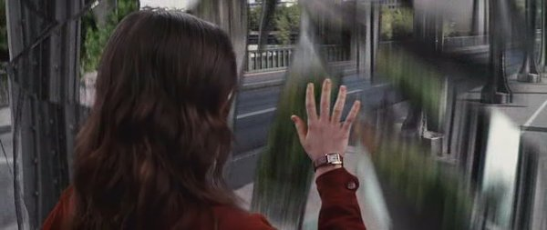
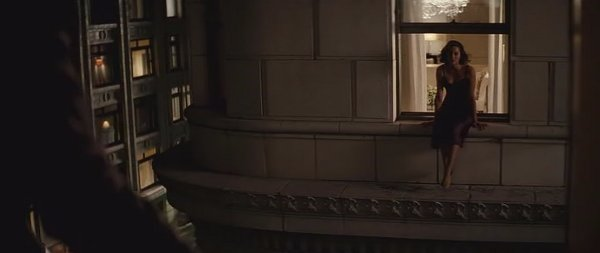
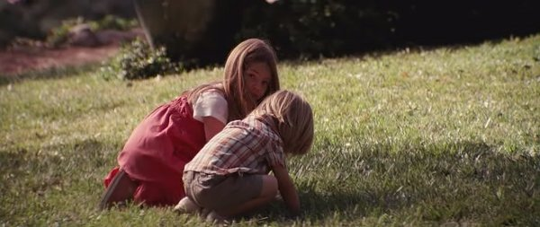
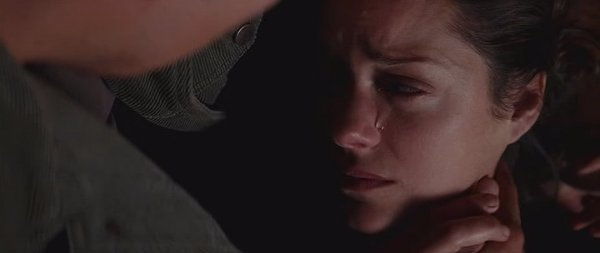
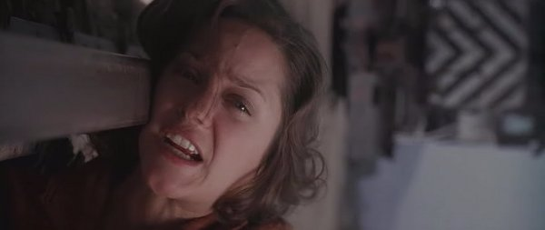

|
Origen: Un pensamiento sencillo y diminuto que lo cambia todo.
Autor : yemeth
|
|
(Advertencia, artículo con detalles de la trama de la película)

Introducción
Para empezar a hilar, recapitulemos ligeramente el argumento de Origen.
El equipo protagonista ha de manipular en sueños la mente de una persona. La complejidad de la misión, exige sumergir a la víctima en tres sueños anidados. En el primero de ellos tienen secuestrado al hijo del gran magnate y acaban por escapar en una furgoneta, en el segundo se encuentran en un hotel, y en el tercero en una fortaleza en una montaña. A estos tres niveles se añade otro más que no parece entender de tales jerarquías de profundidad, y al que llaman el “Limbo”: Un espacio de creación pura -de inconsciente sin límites- del que se habla como un lugar terrible debido a que lo habitual es regresar enloquecido. Si es que vuelves.
Los tres niveles de sueño son utilizados para llevar a cabo la compleja operación “Origen”, consistente en insertar una idea en la víctima haciéndosela asumir de tal modo que confunda su fuente y piense que vino de sí mismo, para así integrarla por completo con su personalidad. Para ello los ensoñadores jugarán con la psique de la víctima de modo que ella misma crea haber producido la idea que se le quiere insertar.
El protagonista, Tom Cobb, sabe secretamente que será posible insertar una idea al hijo del magnate porque él ya lo hizo anteriormente con su esposa, Mal. Ambos habían quedado encerrados en el Limbo, aquel espacio de creación pura en las profundidades del inconsciente. En el Limbo, Cobb recordaba de dónde venía, pero Mal decidió olvidarlo. Para ello escondió en lo más profundo de su inconsciente -en una caja fuerte del Limbo- aquello que podría recordarle que aquel mundo no era real. Este objeto era una pequeña peonza metálica que en los sueños nunca dejaba de girar. Cobb la encontró y la dejó girando en el escondite de Mal para que ella entendiera que se encontraba dentro de un sueño. Insertada con éxito la idea en ella, ambos se quitan la vida sobre la vía del tren y regresan a la vida “real”.
Sin embargo la cosa no acaba aquí, y Mal sigue convencida de que el mundo -esta vez nuestro mundo- no es real... lo que la conduce a suicidarse y a ponerle las cosas muy difíciles a Cobb para no hacerlo.

La maldita peonza, ¿cae o no cae?
El final de la película vuelve sobre el tema de si la realidad es sueño o no. En ningún momento dejamos de ver girar la peonza aunque sí podemos adivinar su tambaleo; y es aquí donde comienza la acalorada discusión sobre si Cobb realmente se encuentra soñando o no. Unos y otros argumentan sobre si la peonza metálica giraba mejor o peor, sobre si se caerá o no se caerá.
Me temo que tal discusión no tiene ningún sentido, ni puede tenerlo interpretación alguna basada en una u otra interpretación. Si la pretensión fuera que la historia consiste en la peonza cayendo o no cayendo, se nos habría enseñado. Sin embargo, lo que se nos muestra es una incertidumbre insuperable. Y si queremos llegar hasta el fondo del asunto tenemos que tener en cuenta necesariamente que a pesar de las apariencias la película sí tiene un final concreto: que no se puede saber si la peonza cae o no, es decir, que no se puede saber si la “realidad” de Cobb es o no un sueño.
Es decir, la película no termina ni con la realidad de Cobb siendo un sueño ni tampoco lo contrario. Su final es la propia imposibilidad de distinguir entre sueño y realidad. Y de hecho esto pone en cuestión la propia validez de los “tótems” a los que se aferran los personajes para distinguir la vigilia del sueño. Durante toda la película, los protagonistas se aferran a sus "tótem", a esos pequeños objetos que les permiten distinguir entre lo que es real y lo que es sueño. Pero el giro final de la peonza metálica invalida el tótem de Cobb. El tótem ya no sirve para saber si estás soñando o no: es imposible distinguirlo, igual que lo es al terminar la película.
Y he aquí la forma en la que funciona todo a un nivel más profundo. En sí, la película es una operación “Origen” destinada a insertar en el público la idea de que este mundo podría no ser real, poniendo en duda no ya la realidad de Cobb sino la del propio espectador. Origen en nuestro mundo es una operación fraguada para insertar en nuestras mentes una idea, una que se extienda "como un cáncer", ¿y si el mundo que nos rodea no fuera real?.
Cobb: Una idea es como un virus, resistente... muy contagiosa. E incluso el germen más insignificante de una idea puede desarrollarse... desarrollarse para definirte... o para destruirte.
Mal: La idea más insignificante, como que... tu mundo no es real. Un pensamiento sencillo y diminuto que lo cambia todo. Estás muy seguro de tu mundo, de lo que es real...
De hecho, ¿y si más allá de la intención de hacer dudar al espectador sobre si el mundo de Cobb (o el nuestro) es "real", la inquietante idea que se nos inserta es que no hay realmente modo alguno de distinguir entre tales niveles de "real" y "soñado", y que ningún fetiche resulta válido cuando uno profundiza lo suficiente?.
Aquí habría que volver a Mal cuando en el Limbo se ríe de Cobb porque este todavía hace distinciones entre arriba y abajo, niveles de profundidad, como si una cosa fuera más o menos sueño que el resto. ¿Dónde está la verdadera diferencia, más allá de la valoración que Cobb decide asignarle al grado “realidad” de uno u otro mundo? ¿No decide acaso Cobb conscientemente mirar hacia otro lado mientras la peonza gira en la escena final?

La Voz del inconsciente, la Reina del Inframundo
Mal es la única proyección del inconsciente con una verdadera profundidad en Origen, con la que pueden dialogar los personajes -especialmente Cobb-, y que además parece empecinada en hacer que se dé cuenta de que algo falla en su realidad. Obviamente no se trata de la Mal real, pero tampoco es algo tan simple como una “proyección”. Ella misma habla de las “proyecciones” como algo distinto a ella, “¿No te corroe ninguna duda? ¿No te sientes acosado Tom, perseguido por todo el planeta por empresas anónimas y fuerzas policiales tal y como las proyecciones acosan al soñador?”. (¿Tiene algo que ver Mal con lo que le sucede en el mundo “real”?).
Cuando en el Limbo tenemos a Cobb negociando con Mal si dejará irse al hijo del magnate a condición de que él se quede, está otorgando a Mal una entidad muy superior a la de una simple proyección. Ella es la dueña del Limbo colectivo, es la Guardiana del Umbral, es la Reina del Inframundo en el que todo puede suceder con tan sólo pensarlo. Y es por esto que Ella, incluso antes de que Cobb y Ariadne aparecieran, ya había encontrado, atado y ocultado al hijo del magnate que vienen a rescatar.
Mal es entonces la apariencia particular por la que a Cobb se le manifiesta esta Voz del inconsciente, aquella que es también Reina del Limbo. ¿Y qué es lo que diferencia a Cobb del resto de los protagonistas de la película? ¿Por qué la Reina del Inframundo le presta atención a él para intentar enseñarle a distinguir que su mundo no es real, pero no hace lo mismo con los demás?

Tom Cobb y su descenso al Limbo
Lo único que realmente hace diferente a Cobb, es que él ha atravesado el Limbo.
El Limbo es un lugar al que se llega cuando uno está durmiendo y muere, pero no tiene la posibilidad de despertarse. Es como una muerte sin muerte, una muerte sin sus consecuencias más definitivas, porque lo que ha muerto no es el cuerpo físico sino la ideación que uno sueña sobre sí mismo.
En su primera visita al Limbo, Cobb consigue salir entendiendo que nada allí es real y muriendo en consecuencia a esa realidad eternamente configurable.
Tras su paso por el Limbo, no podemos más que suponer que se ha llevado algo consigo que no traía cuando entró: la Voz de su inconsciente que ahora le persigue dondequiera que vaya, intentando atraerle y hacerle entender que su mundo no es real. Una voz alimentada por la propia culpabilidad de Cobb, que mientras ella estaba viva se intercalaba con la verdadera Mal. ¿Y no será entonces el contacto con esa Voz que ya nunca te abandonará el verdadero peligro del Limbo del que se advierte veladamente una y otra vez a lo largo de la película?
Es como si al acceder al Limbo, el propio inconsciente cobrara vida para perseguir desde entonces a Cobb como un fantasma, para hacerle asumir aquello que entendió allá y que es la misma idea que el director intenta “insertar” en nuestras mentes: que más allá de la pregunta de si nuestro mundo es real, no podemos distinguir real de irreal. Que no tiene sentido hablar de arriba y abajo, de sueño y de vigilia.
Cobb: Sé lo que es real, Mal.
Mal: ¿No te corroe ninguna duda? ¿No te sientes acosado Tom, perseguido por todo el planeta por empresas anónimas y fuerzas policiales tal y como las proyecciones acosan al soñador?. Reconócelo. Ahora ya no crees en una sóla realidad, así que elige, elige estar aquí. Elígeme a mí.
Sin embargo, una pequeña esperanza de realidad subsiste oculta. Los ojos de Cobb están ciegos a ella, se resisten a verla, porque para poder hacerlo debe renunciar a un mundo. Y Mal se lo dice a él intentando que mire más allá de la culpa, de sus apegos, del mundo al que ya no pertenece:
Mal: Soy lo único en lo que crees ya, Tom.
Si todo es ilusorio, si todo es sueño sin más, ¿por qué existe algo como la Reina del Inframundo, que intenta hacerle entender a Cobb que todos los mundos son sueño y que no hay arriba ni abajo?. Ella es la última esperanza de algo real, Ella es lo único que permanece en un sueño que se derrumba.
Cobb la rechaza porque su culpabilidad aún le corroe. El suicidio, sus hijos... su mente carece de la serenidad necesaria para entender lo que se le ofrece. Y decide regresar a la cómoda ilusión, decide pensar que sus hijos son reales y que ha superado el suicidio de Mal, decide que la Reina del Inframundo no es más que una proyección, decide volver a encerrarse en el sueño.
Mal: ¿Y si te equivocas? ¿Y si yo sé lo que es real?
La peonza metálica gira sobre la mesa al final de la película, pero Cobb ya no le presta atención, nublado por la presencia de sus hijos: deja de importarle si su mundo es real o no, ha decidido creer en una realidad y mirar para otro lado si algo la contradice.
Quizá la Reina del Inframundo le siga esperando. Si así fuera, Cobb todavía tendría la opción de confiar en ella, dejando que le guíe y encontrando el modo de poner su cabeza sobre las vías para abandonar junto a ella las realidades ilusorias que aún subsisten en su cabeza.
Estás esperando a un tren,
un tren que te llevará lejos.
Sabes dónde quieres que ese tren te lleve,
pero no dónde te va a llevar.
Pero no te importa... ¡dime por qué!

|
|
 RSS
RSS